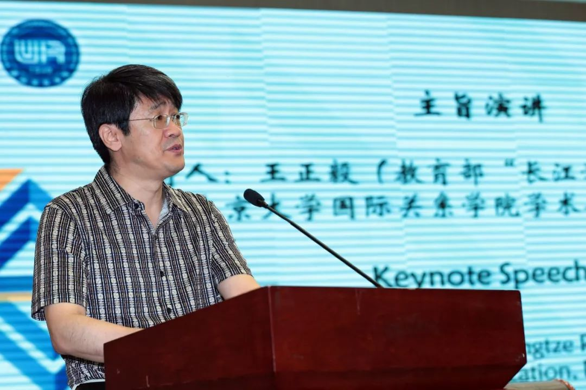

收录于合集
以下文章来源于国际关系学院 ，作者国际关系学院
国际关系学院 .
国际关系学院校园资讯发布平台，欢迎师生校友、社会人士关注。

审视西方国际关系理论 推进理论建构本土化进程
——“国际关系研究百年回顾与展望”国际学术研讨会在我校举行
2019年7月2-3日，国际关系学院主办的“国际关系研究百年回顾与展望”国际学术研讨会在北京举行，来自中国、英国、美国、丹麦、印度、日本等国的百余位代表出席了本次会议。
会议开幕式
会议开幕式由国际关系学院副校长吴慧教授主持，国际关系学院党委书记韦春江致辞。
副校长吴慧教授主持开幕式
韦春江书记对海内外代表的到来表示热烈欢迎。他指出，今年是中华人民共和国成立70周年，同时也是国际关系学院建校70周年。从学科发展来看，自1919年英国威尔士大学设立世界上第一个国际关系教席以来，国际关系学在2019年迎来学科的百年诞辰。近段时间来，中国领导人在各种场合多次提出，当今世界正处于“百年未有之大变局”，本次会议就是在此背景下举行的，具有重大意义。面对当前存在的各种治理赤字、安全赤字、发展赤字问题，重塑国际秩序、完善全球治理机制非常重要。中国在推动国际秩序朝向更加公正合理的方向发展过程中发挥了巨大作用。在政治上，中国提出构建“人类命运共同体”，寻求人类共同利益和共同价值的新内涵。在安全上，中国领导人提出并大力倡导“总体国家安全观”，既重视外部安全，又重视内部安全，对内求发展、求变革、求稳定，建设平安中国；对外求和平、求合作、求共赢，建设和谐世界。在经济上，中国提出“一带一路”倡议并身体力行，通过积极发展与沿线国家的经济合作伙伴关系，共同打造政治互信、经济融合、文化包容的利益共同体、命运共同体和责任共同体。在文化上，中国通过主办亚洲文明对话大会以及一系列的国家间和地区文化活动，致力于深化文明交流互鉴，致力于各国的合作共赢大计，致力于夯实人类命运共同体的人文基础。中国在各个层面的外交实践，为国际关系的相关研究提供了很多有益的案例样本。
校党委书记韦春江致辞
韦春江书记还指出，中国政府提出并倡导的“人类命运共同体”理念，对于解决当前中美经贸摩擦将发挥重要作用。在6月28-29日举行的G20大阪峰会上，习近平主席与特朗普总统进行了双边会晤，相信中美关系终会“拨开云雾见天日”，再次走上正常发展的轨道。而我们的学术研究，如何更好地对解决包括中美经贸摩擦在内的重大现实问题提供理论和政策支持，既是我们从事学术研究的出发点和落脚点，更是国际关系这个学科赋予我们的光荣使命。
主旨嘉宾发声
共论全球国际关系
会议主旨演讲阶段由教育部“长江学者”特聘教授、北京大学国际关系学院学术委员会主任王正毅教授主持，伦敦经济学院荣休教授、国际关系学院荣誉教授巴里·布赞教授，外交学院院长秦亚青教授，印度尼赫鲁大学第一副校长钦塔玛尼·马哈帕查教授，北京大学国际关系学院博雅特聘教授王逸舟教授，日本京都大学中西宽教授发表主旨演讲。

王正毅教授
巴里·布赞教授指出，现代国际关系研究的理论根源可追溯到19世纪，国际关系研究反映国际关系的现实和实践，同时也被国际关系实践塑造。国际关系研究具有浓重的欧洲中心主义色彩，这也是国际关系研究的核心区域。二战后，特别是冷战结束后，国际关系研究从核心区域向边缘区域扩展，同时也伴随着财富、权力和文化权威从传统的核心区域向边缘区域扩散，国际关系学需要一个更加全球化的视角。
巴里·布赞教授
秦亚青教授认为，文化在建构和发展国际秩序，以及在社会理论发展过程中发挥着非常重要的作用，区域化的本地知识非常重要，没有任何一种知识可以被认为是全球化的知识。不管是在知识的生成，或者是理论的形成过程中，本地化的知识都非常重要。文化的重要性在于，我们所有的一切都是文化的存在。在新的历史舞台上，理论的发展会带来国际关系的进一步演进。
秦亚青教授
钦塔玛尼·马哈帕查教授介绍了印度的国际关系研究情况。印度的国际关系研究主要关注在世界变化中印度所处的位置、世界秩序、南北关系等问题。印度学者在从事国际关系研究的时候，很多人也是完全受西方理论影响。因此，除西方理论外，印度也需要对国际关系有新的理解，基于印度文化提出本国对国际关系研究的理解和价值。同时，马哈帕查教授认为，国际关系研究的首要责任是要去定义国际关系的领域到底是什么，要把国际关系学塑造成一个真正独立的学科。
钦塔玛尼·马哈帕查教授
王逸舟教授指出，中国国际关系研究在最近一二十年的进步主要有三点，分别是研究机构数量的极大扩展、基础设施的大为改善以及各种资源的快速增加；中国学者研究视野的扩大；中国学者特别是年轻一代，提出了非常具有自主意识的，创造中国特色、中国声音、中国面孔、中国根源的国际关系理论。但同时，中国国际关系研究存在研究主题过于趋同，知识结构碎片化，研究缺少通约性以及研究失去方向感等问题。在新时代，我们如果能够重塑古典，把最伟大思想家的精神发扬光大，结合中国已有的优势，那将使中国的国际关系研究再上台阶。
王逸舟教授
中西宽教授介绍了日本国际关系研究的发展历程。日本国际关系研究具有跨学科的性质，同时，由于日本独特的历史和文化影响，日本的国际关系主要强调由美国主导的国际关系的性质，同时侧重政策研究。日本国际关系研究弥补了日本智库在政策方面的一些缺失，同时也降低了学术界和政策制定者之间的分隔状态。
中西宽教授
权威学者研讨
共议国关前沿理论
主旨演讲结束后，30多位来自海内外的专家学者就全球国际关系研究的主流理论及其进展、全球国际关系研究的非主流理论及其进展、全球国际安全研究及其进展、全球国际关系研究的趋势与未来、中国国际关系研究：评估与展望等5个议题发表了演讲，与会专家亦围绕这些议题展开了热烈讨论。各位专家多样性的研究视角，多元化的研究方法，多维度的研究路径，对于“百年国关”这个宏大的研究议题很好地起到了“回顾”与“展望”的作用。
与会学者普遍认为，国际关系研究出现了繁荣倾向，但是当前美国国际关系研究一家独大的学科特征并不健康，国际关系研究存在普遍性和本土性建构的问题，全球性的国际关系学才是国际关系学科发展的正确路径。
与会学者提出，中国思想是国际关系理论建设的丰富资源，因为中国具有全球悠久的政治、历史和哲学传统。把中国传统思想带入中国的国际关系研究，不仅从微观层面可以讨论，也可以从宏观的角度进行理解，进而形成中国和西方的交集，中国和西方的并行。中国理论要有中国特色，必须是基于中国的成功或者中国的发展基础上的，中国在政治经济方面的成功是一切理论的前提。同时，要成为一种理论，必须要有统一的范式，要有自己的本体论、认知论、方法论。

专家学者发言
与会学者认为，构建人类命运共同体是新时代的世界理想，也是超越霸权的战略构想。人类命运共同体思想顺应了世界历史转变过程中世界市场不断扩大的趋势，也超越了在世界市场形成过程中侵略扩张和霸权战争此起彼伏的历程和局限，集中反映了新时代的中国寻求人类共同利益和共同价值的重大理论和实践创新。人类命运共同体的实现需要超越国际、超越关系、超越理论，用超越自我的眼光看待世界。
专家学者发言
与会学者指出，中国的国际安全研究是中国国际关系研究重要的组成部分，其特点是对重大问题的研究不断深化，学者对国际安全的研究跟中国自身的需要紧密相连，同时研究方法逐渐拓展，出版物也不断丰富，但是国际安全研究的科学性、系统性还有待加强，并且研究议题需要与安全的理论内核紧密结合。

专家学者发言
与会学者认为，跨学科研究也是一种学术实践，是知识生产和知识构建一种特别重要的方式。进行跨学科研究可以促进知识体系的贯通，打破学科之间的壁垒，使研究更具系统性，更有研究效率。国际关系学科需要应对的一些问题可能需要两个学科，甚至三个学科以上的知识储备来应对。

专家学者发言
与会学者提出，女性主义国际关系作为一门反思性理论，最开始关注的是白人女性所获得的权利。当前的女性主义国际关系研究，更多关注的是人文方面的研究以及所有人群所拥有的权利。对于女性主义的关注和未来展望，如果想要掌握“权力”的话，女性主义就需要去回答怎样改变世界体系。
与会嘉宾对话
共辩学科发展路径
本次研讨会还专门设立了两场理论对话环节。第一场理论对话“国际关系与国际安全研究的进展与展望”由浙江大学非传统安全研究中心主任余潇枫教授主持，对话嘉宾为国际关系学院校长助理达巍教授，哈佛大学肯尼迪政府学院教授、 International Security 主编斯蒂芬·米勒教授，钦塔玛尼·马哈帕查教授，中国人民大学国际关系学院副院长金灿荣教授。
理论对话环节
第二场理论对话“中国国际关系研究的本土化及其路径”由上海大学特聘教授、上海大学拉美研究中心主任江时学教授主持，对话嘉宾为巴里·布赞教授，上海美国学会会长、复旦大学“一带一路”及全球治理研究院常务副院长黄仁伟研究员，美国乔治·华盛顿大学迈克尔·巴内特教授以及同济大学政治与国际关系学院院长门洪华教授。
理论对话环节
对话嘉宾发表观点，并和与会专家及参会同学互动讨论。两位主持人幽默睿智、充满激情的主持风格，对话嘉宾深邃敏锐的学术观点，与会专家激烈的学术讨论和思想碰撞，这两场思想交锋的理论对话使会议高潮迭起。
关于理论与实践的关系。讨论嘉宾认为，国际关系的理论与实践必须要紧密结合起来，国际关系的现实也为国际关系理论研究的发展起到了推动作用。国际关系理论和国际安全理论，需要解决的是理论建构和理论检验的问题。各种百家争鸣都是理论，学者都是在自己的研究旨趣下发展不同的理论，但导致的一种倾向是，当前的很多争端只是各种主义之间的争论，而与现实和实践脱节。
理论对话环节
关于国际关系理论是否具有普适性，存在两种对立的观点。部分学者认为，国际关系具有普适性的价值，国际关系的理论研究范围有一些非常明确的界定。部分学者并不否认国际关系理论具有普适性，但也认为，国际关系具有特殊性，国际关系理论的发展都是在特定的国家形成一个理论的聚焦。随着中国的发展，以及中国和世界关系互动关系的增加，探索并形成中国的国际关系理论，不仅是必要的，也是必然的。
与会代表还认为，当前主流的国际关系理论总体上是一个国际体系中的霸权国家理论，它是这个霸权国家的霸权形成过程中，以及维护这个霸权的过程中所需要的理论体系，因此不可能脱离这种霸权的需要。无论是美国中心的现实主义、建构主义、自由主义理论，都是为这个霸权利益服务。即便是最理性的理论，也不能摆脱这个基本点。一些学者则提出，国际关系理论（IRT），并不是指统一的一个理论，国际关系理论是多个并存的，这是一个群体性的概念而非唯一性的概念。
理论对话环节
关于国际关系理论中国学派的建构问题。部分学者认为，中国已经形成了具有中国特色的国际关系理论，例如秦亚青的世界政治的关系理论，阎学通的道义现实主义，赵汀阳的天下主义，五角场学派，清华学派等等。但也有部分学者认为，中国国际关系理论来源于中国国际关系的实践，中国国际关系实践还正在进行中，要形成中国的国际关系理论，必须要与中国传统文化相联系，因此中国的国际关系理论要完全形成，我们仍然需要耐心和时间。
研讨会闭幕式由国际关系学院副校长郭惠民教授主持，国际关系学院校长陶坚教授作会议总结。
副校长郭惠民教授主持闭幕式
陶坚校长代表国际关系学院对参加本次研讨会的所有海内外代表和工作人员表示感谢，同时对本次会议的成功举行给予了高度评价。陶坚校长指出，本次会议在中国的国际关系研究、在国际关系学术发展史上都是值得记录的重要事件，会议可以用“思想盛宴”加以概括。同时，陶坚校长结合国际关系学院的人才培养指出，国际关系研究不仅要解释现实，也要塑造未来，做好承前启后，只有把更多有用和有价值的知识传递给学生，才能够塑造国际关系的未来。陶坚校长还代表国际关系学院邀请参会的各位专家，能够继续到国际关系学院进行讲学和参加研讨，让国际关系学院的学生接触国际关系的学术前沿，汲取更多的学术养分。
校长陶坚教授作会议总结
当今世界正处于“百年未有之大变局”，国际形势错综复杂，尤其是在经济全球化面临单边主义和保护主义势力的挑战、中美关系遭遇挫折的时候，需要各国的诚意与善意、包容与合作方能应对。中国作为一个负责任的大国，更加珍惜来之不易的和平环境，积极扩大对外开放、参与全球和地区安全治理，并努力地推动形成新型国际关系、构建全球互联互通伙伴关系。国际关系学院举办的本次国际学术研讨会，旨在以马克思主义为指导，通过对百年国际关系研究进行评价，分析相关研究的成就和不足，展望国际关系研究的未来路径，特别是就重大的国际关系与国际安全理论问题进行了深入分析，对更好地审视西方国际关系理论，推进中国国际关系理论本土化，夯实人类命运共同体建设的学术基础发挥了积极作用。
本次研讨会也是国际关系学院自2014年起连续第六年举行的大型国际学术会议，会议由科研处《国际安全研究》编辑部承办，对外交流合作处、党委宣传部协办，并得到了党委行政办公室、计划财务处、校团委、保卫处、后勤服务中心、研究生部、网络与教育技术中心等部门以及外语学院等院系的大力支持和协助。
新京报 报道本次研讨会
光明日报 报道本次研讨会
人民网 报道本次研讨会
环球网 报道本次研讨会
中国日报 报道本次研讨会
更多阅读
【重磅速递】约瑟夫·奈：美国霸权的兴衰：从威尔逊到特朗普 | 国政学人
【重磅推荐】巴里·布赞：英国学派视角下的中国崛起 | 国政学人
【重磅速递】米尔斯海默：注定失败：自由主义国际秩序的兴衰 | 国政学人
【百年国关】历史在国际社会中的应用：从巴黎和会到现在 | 国政学人
【国际组织】IO杂志：联合国维和行动的武力运用问题研究 | 国政学人
【国际秩序】为什么自由主义国际秩序理念将美国外交政策引入歧途？| 国政学人
【关系理论】“关系”：世界政治关系理论的中国话语 | 国政学人
【英国学派】张勇进：中国与全球国际社会中的自由主义等级制：实力与对规范变迁的协商 | 国政学人
【地区秩序】论经济实力的可转化性：中国经济崛起与东亚安全秩序 | 国政学人
【中俄关系】不得已的伙伴：系统-单元动态与中俄关系 | 国政学人
【IPE研究】美国对外贸易政策的“1934年体制”是如何形成的？| 国政学人
【现实主义】斯蒂芬·沃尔特：傲慢的终结与美国克制的新时代 | 国政学人
【理论批判】系统、层次与结构理论：沃尔兹的理论并非系统理论 | 国政学人
【外交政策】单极体系下的不和平状态与美国外交政策 | 国政学人
【欧洲研究】资本主义多样性与合规：加入欧盟后中东欧的经济改革 | 国政学人
【理论研究】吴建树：权力、道德、均势、联盟与摩根索——汉斯·摩根索的经典现实主义思想再解读
【友谊国关】将友谊重新引入国际关系：从中国到西方的关系本体论
【定量研究】政党实力和经济增长（Party Strength and Economic Growth）| 国政学人